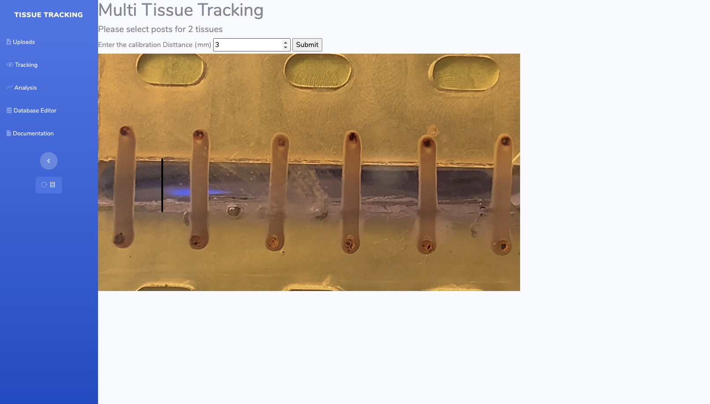
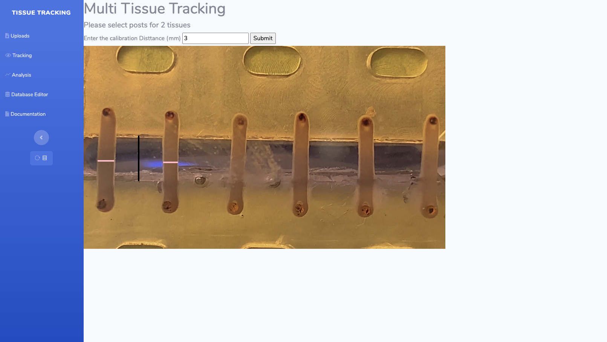
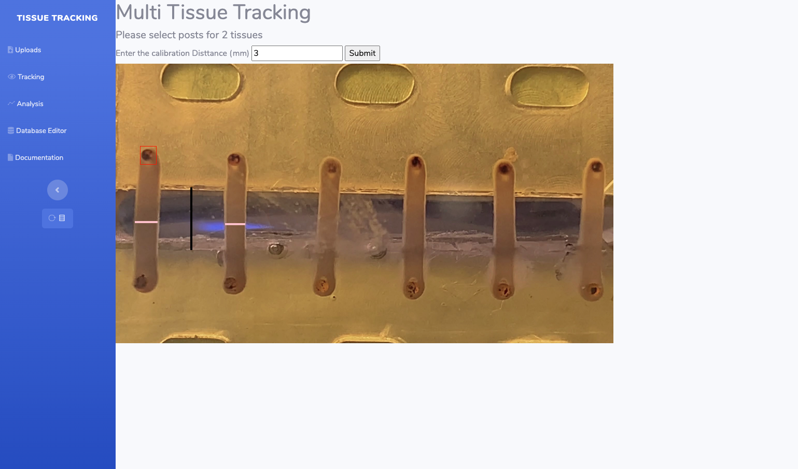
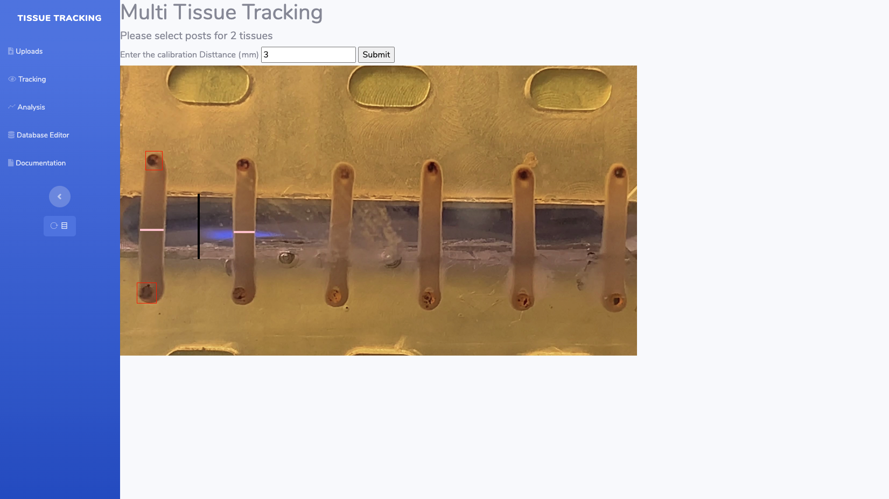

Setup
This has been tested on a Digital Ocean droplet running Ubuntu 18.04.3 (LTS) with docker pre-installed.
Copy and paste this startup script into the 'User Data' section during droplet creation. If that does not work or you are not using digital ocean please follow the manual instructions.
#!/bin/bash
curl -L "https://github.com/docker/compose/releases/download/1.26.1/docker-compose-$(uname -s)-$(uname -m)" -o /usr/local/bin/docker-compose
chmod +x /usr/local/bin/docker-compose
wget -P
~ https://raw.githubusercontent.com/teammurphy/Multi_Tissue_Tracking/main/docker-compose.yml
docker-compose -f ~/docker-compose.yml up -d
SSH into virtual machine:
$ ssh root@ip-of-virtual-machine
Install Docker:
Depends on operating system.
Update docker-compose:
$ curl -L "https://github.com/docker/compose/releases/download/1.26.1/docker-compose-$(uname -s)-$(uname -m)" -o /usr/local/bin/docker-compose
$ chmod +x /usr/local/bin/docker-compose
Pull docker-compose.yml:
$ wget https://raw.githubusercontent.com/Jack-alope/Multi_Tissue_Tracking/main/docker-compose.yml
Deploy
$ docker-compose up -d
Uploads
Uploads info to come. Can upload video or folder ... hopefully.
Tracking.
Enter calibration distance, submit, and draw bow (black) corresponding to that distance.
Draw a box (pink) for each cross section.
Draw a box (red) for the top left post.
Draw a box (red) for the bottom left post.
Continues towards the right drawing boxes (red) in same fashion for each tissue.
Tracking will start automatically once you have drawn the expected number of posts.
Analysis
Dashboard: Adjusts graphs in real time based on user input. Points shown are points used for calculations once "Calculate" is clicked.
| Options | Meaning | Restrictions | Default |
|---|---|---|---|
| Polynomial | What polynomial to use for curve fitting | < window length | 3 |
| Window Length | Number of coefficients for smoothing | odd, greater than polynomial | 13 |
| Peak Sen. Thresh | How sensitive to finding peaks. Lower = more sensitive | (0, 1) | .6 |
| Buffer | Distance from peak before it starts looking for base/front points | If too large will miss base/front points. | 3 |
| Min Distance | Min distance between peaks | If too large will miss peaks. | 5 |
Calculations
Explanations to come